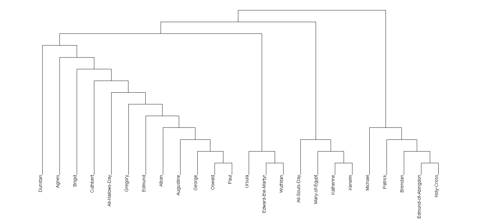
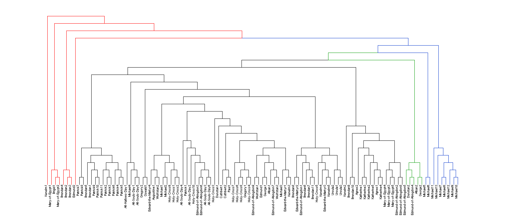
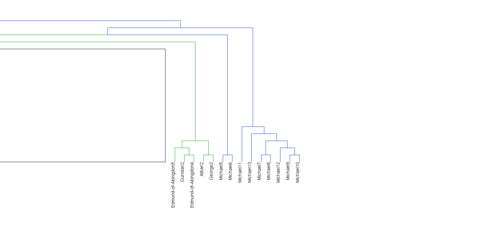
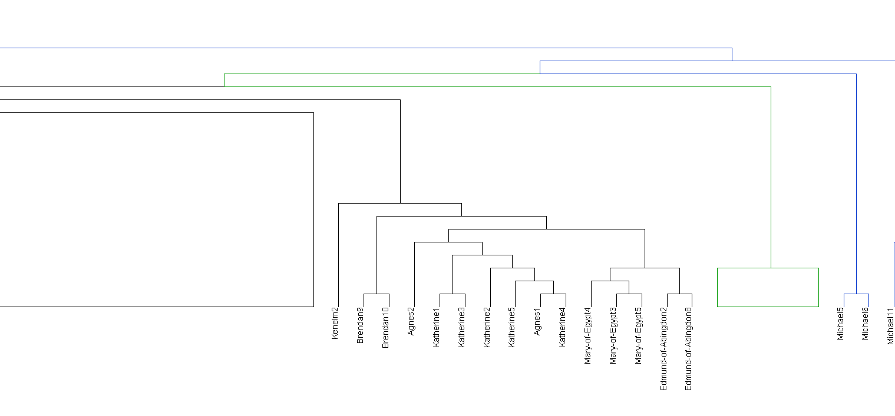
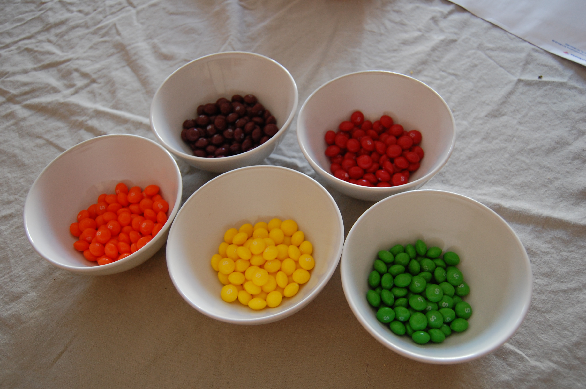
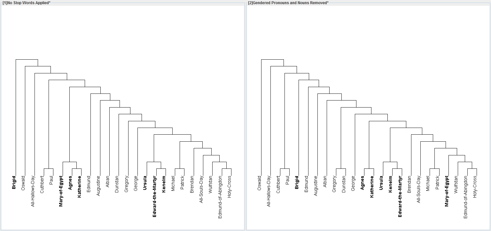

Lexomic Evidence and the Composition of the Early South English Legendary
Scott Kleinman
California State University, Northridge
scott.kleinman@csun.edu · @sekleinman
Digital Britain Conference, Harvard University, March 25, 2016
The South English Legendary: Basic Orientation
- Born in mid 13th c. Worcestershire, where it was revised repeatedly.
- Originally based on Latin liturgical lessons.
- The original form, which Görlach calls "Z", probably followed the liturgical calendar, but we do not know how complete it was.
- In Gloucestershire, a copy of "Z" was revised and supplemented with material from the Legenda Aurea. Görlach calls this revision "A".
- Oxford, Bodleian Library, Laud Misc. 108, a version of "Z", was copied c. 1275-1300, apparently by an Oxfordshire scribe. Mid-way through, the scribe encountered a copy of the "A" revision and adopted it as his exemplar.
- In the subsequent centuries, copies of the SEL fanned out from Worcestershire and Gloucestershire, and the text continued to undergo revision.
Some Examples of Text Entropy
| Text | Entropy (bits per letter) |
|---|---|
| Modern English (ave.) | 4.03* |
| Goscelin of Saint-Bertin's Vita sanctae Amalbergae virginis | 4.11 |
| Beowulf | 4.18* |
| South English Legendary (Laud Misc. 108)* | 4.34 |
* Quoted from Katherine O'Brien O'Keeffe, Visible Song (1990).
** With small sections of supplied text from later manuscripts.
Considerations for Text Preparation
- Diplomatic or edited text?
- Handling of text lacunae: Portions taken from British Library, Harley 2227 (c. 1300) and the Vernon Manuscript (c. 1400).
- Likelihood that female saint's lives are distinguished by feminine pronouns.
- What stop words are suitable for the corpus?
- Variations in text length.
Effect of Text Length on Cluster Analysis

Compensation for Length Using TF-IDF
{kind=link}
Compensation for by Segmentation (700 words)
{kind=link}
{kind=link}
Outlier Segments 2
{kind=link}
- I. Alban 2, George 2
- II. Dunstan 2, Edmund of Abingdon 4-5
- III. Michael 5-6
- IV. Michael 7-13
The Three Parts of Michael
| Part | Lines |
|---|---|
| Michael I | 1-102 |
| Michael II | 103-390 |
| Michael III | 391-803 |
Outlier Segments 3
{kind=link}
Texts in the Main Section
| Liturgical/Breviary Affinities | Saint's Lives | Homletic Material | Biblical Paraphrase |
|---|---|---|---|
| Alban | Brendan | All Hallows | Paul |
| Augustine | Edmund of Abingdon | All Souls | |
| Cuthbert | Edward the Martyr | ||
| Dunstan | Kenelm | ||
| Edmund | Michael I | ||
| George | Patrick | ||
| Gregory | Ursula | ||
| Holy Cross | Oswald | ||
| Wulfstan |
Alternative Clustering Methods
K-Means

Gendered Words Removed
{kind=link}
Stop words: heo, heore, him, hym, hire, is, ire, himself, himselue, himseolf, himsulf, himsulue, himsuluen, hir, hire, hireself, hiresulf, his, hy, hym, hys, maide, maiden, maidene, maidenhod, mayde, maydenes, maydenhod, moder, laudedi, lauedie, lauedies, leuedi, moder, quene, quiene, womman, seint, seinte
{kind=link}
{kind=link}
{kind=link}
{kind=link}